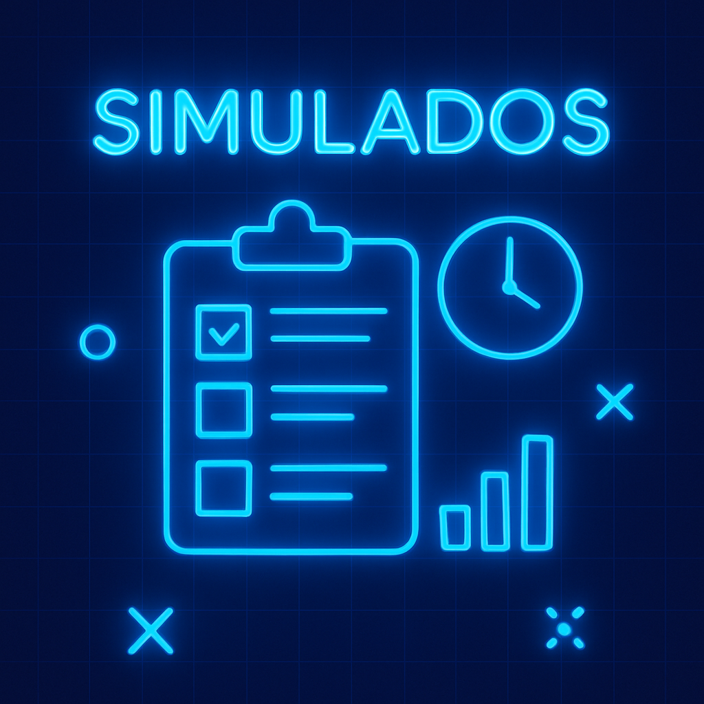
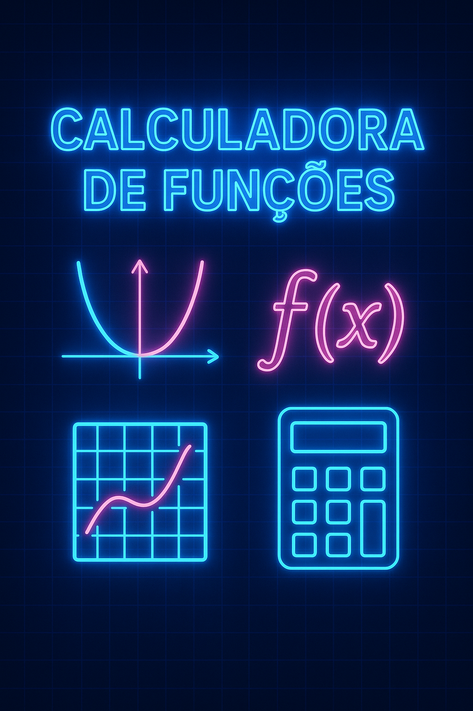

Meus projetos
Resumos de Matemática para o ITA
Página com resumos organizados por temas (Funções, Geometria, Análise Combinatória etc.), ideal para revisão antes das provas.

Simulados de Matemática
Simulados com questões de vestibulares anteriores (ITA, IME, Fuvest) com gabarito e resolução comentada.

Calculadora de Funções
Uma ferramenta interativa onde o aluno insere uma função e recebe gráficos, domínio, imagem e propriedades importantes.